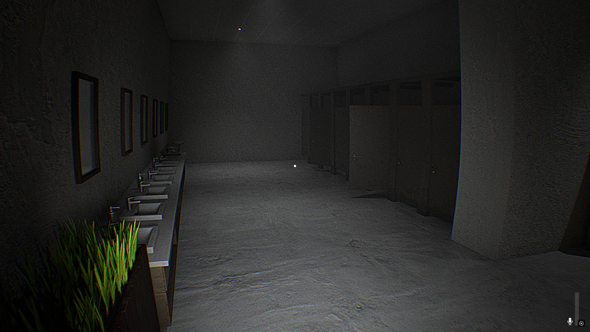

Projects
Featured projects across game development and systems programming, including coursework and independent work. For a complete list of my games, see my itch.io page.
Active Projects
Axiom
Code: github.com/aadit1004/axiom
Axiom is a work-in-progress C++ static library with core utilities, linear algebra, optimization routines, and lightweight I/O for math-heavy applications.
Past Projects
Custom OS Kernel (UBC CPSC 436A)
Source code unavailable due to course policy
Designed and implemented a custom OS kernel in C on Barrelfish OS as part of a small team, adding support for capabilities, virtual memory, multicore processing, and message passing. Implemented memory management and virtual memory subsystems using dual-key and augmented AVL trees, bitmaps, and linked lists to achieve fast O(log n) allocation, mapping, and coalescing with low fragmentation. Built message-passing RPC over shared frames with waitsets and ring buffers for thread-safe, deadlock-free inter-process and cross-core communication, using Docker and Git for development.
Parallel CPU D-Cache Simulator
Code: github.com/Aadit1004/ParallelCacheSim
This project is a performance-focused CLI simulator designed to model multi-level data caching (D-Cache) behavior in CPUs, with configurable cache sizes, associativity, replacement policies, and write policies. The simulation supports multi-threaded execution under the MESI protocal to evaluate cache efficiency under parallel workloads.

Hush (UE5 Game)
Code: github.com/Aadit1004/Hush
Developed an early remake of Silent Stalker of Level 0, featuring improved graphics, gameplay, and story. AI logic will be introduced in a future update. Optimized performance using Level Streaming, improving resource allocation and increasing frame rate stability by 20-30%. Designed Niagara particle systems and volumetric effects, maintaining visual fidelity while optimizing performance through culling, LODs, and pooling techniques.
